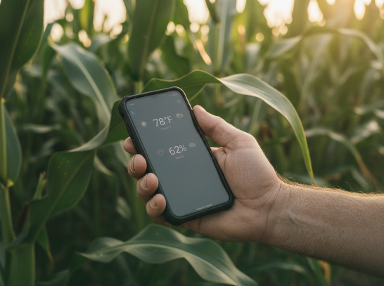
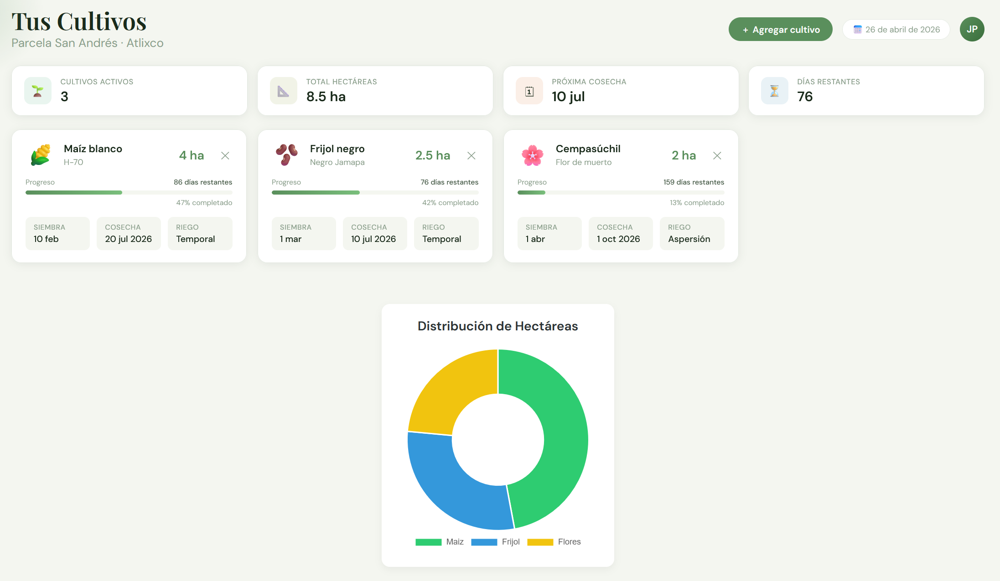
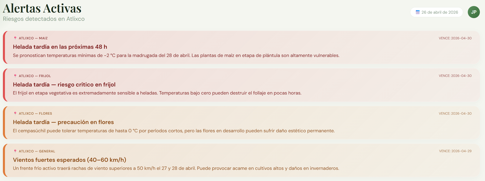
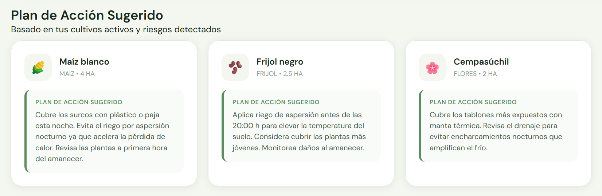
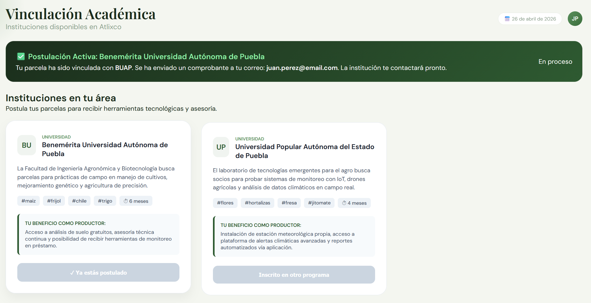

AgroAlerta traduce datos climáticos reales en recomendaciones claras y prácticas para tu parcela. Sin lenguaje técnico ni complicaciones.

En Puebla, las sequías y heladas golpean la economía local. AgroAlerta cierra la brecha de información.
Las temperaturas extremas afectan los ciclos de cultivo.
Sequías y heladas son cada vez más frecuentes e impredecibles.
Productores pierden su sustento por falta de avisos a tiempo.
Ingresa tu cultivo y tipo de riego. El sistema usa fuentes oficiales para darte alertas precisas.

Te avisamos antes de un cambio drástico en el clima con mensajes claros, adaptados a tu etapa de cultivo.

Recibe recomendaciones prácticas: cuándo regar o cómo proteger tus plantas de forma efectiva.

Únete a instituciones y expertos comprometidos con la resiliencia climática. Juntos fortalecemos la soberanía alimentaria del campo mexicano.

Reducción de pérdidas mediante prevención temprana.
En México sin acceso a datos climáticos precisos.
Diseñado para ser usado por cualquier persona.
Colaboramos con instituciones comprometidas con la resiliencia climática del campo.